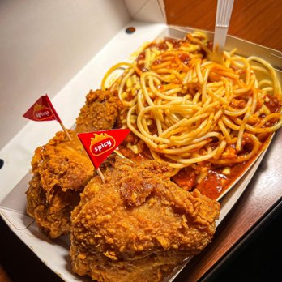

About the Page
I would like to share my expriences on my travel to New York City, and the purpose of our visit.

Travel Itinerary
- Food
- Places
- Performance Day
Food in New York City, definitely one of the best food that I tasted, but since I am a Filipino, I still look to eat very familiear to me which is Jollibee in New York.

Places has a lot of iconic places which are famous around the world, many people are dream to visit the places here such as Statue of Liberty, 911 Memorial place, Empire State Building and many more.
A Night at Carnegie Hall in New York City, is one of the best experience I had had on my life. Carnegie Hall is the place that every musician dream to perform, and I am so blessed to be here and to represnt my country.